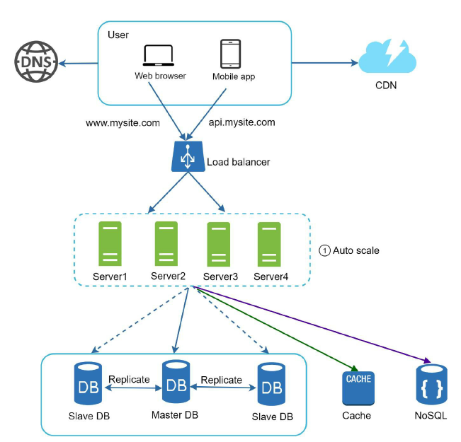

Single server setup
Below figure illustrates a single-server setup where all components, including the web application, database, and cache, are hosted on a single server.
DNS Hierarchy
- Users typically access websites using domain names, such as api.mysite.com. The Domain Name System (DNS) is usually a paid service managed by third-party providers rather than being hosted on our own servers.
- When a user accesses a domain, the DNS resolves it to an Internet Protocol (IP) address, such as 15.125.23.214, which is then returned to the browser or mobile app.
- With the IP address obtained, the browser or app sends Hypertext Transfer Protocol (HTTP) requests directly to the web server.
- The web server processes these requests and returns HTML pages or JSON responses for rendering in the browser or app.
Database
- As the user base grows, a single server becomes insufficient, necessitating the use of multiple servers.
- One server handles web and mobile traffic, while another is dedicated to the database shown in figure.
- By separating the web/mobile traffic (web tier) from the database (data tier), each can be scaled independently to better accommodate increasing demand.
- Relational databases are also called a relational database management system (RDBMS) or SQL database. The most popular ones are MySQL, Oracle database, PostgreSQL, etc. Relational databases represent and store data in tables and rows.
- Non-Relational databases are also called NoSQL databases. Popular ones are CouchDB, Neo4j, Cassandra, HBase, Amazon DynamoDB, etc. These databases are grouped into four categories: key-value stores, graph stores, column stores, and document stores. Join operations are generally not supported in non-relational databases.
- By separating the web/mobile traffic (web tier) from the database (data tier), each can be scaled independently to better accommodate increasing demand.
- Vertical scaling has a hard limit. It is impossible to add unlimited CPU and memory to a single server.
- Vertical scaling does not have failover and redundancy. If one server goes down, the website/app goes down with it completely.
- A user gets the IP address of the load balancer from DNS.
- A user connects the load balancer with this IP address.
- The HTTP request is routed to either Server 1 or Server 2.
- A web server reads user data from a slave database.
- A web server routes any data-modifying operations to the master database. This includes write, update, and delete operations.
- When to Use Cache: Use cache for data that's read frequently but modified infrequently. Avoid caching important data as cache is volatile and can be lost on server restart.
- Expiration Policy: Implement an expiration policy to remove outdated cached data. Balance the expiration time to avoid frequent reloads or stale data.
- Consistency: Ensure the cache and data store are in sync, especially when scaling across regions, to avoid inconsistencies.
- Mitigating Failures: Use multiple cache servers across different data centers to avoid a single point of failure (SPOF) and overprovision memory to handle increased usage.
- Eviction Policy: When the cache is full, use an eviction policy like Least Recently Used (LRU) to remove old data and make space for new entries.
- Cost: CDNs involve charges for data transfers. Avoid caching infrequently used assets to save costs.
- Cache Expiry: Set appropriate cache expiry times to balance freshness and reduce unnecessary reloads from origin servers.
- CDN Fallback: Ensure your application can handle CDN outages by retrieving resources from the origin server if needed.
- Invalidating Files: Remove files before expiration by invalidating CDN objects via API or using object versioning (e.g., add version numbers to URLs).
- Static assets (JS, CSS, images, etc.,) are no longer served by web servers. They are fetched from the CDN for better performance.
- The database load is lightened by caching data.
- Session Management: The server maintains session information for each user, keeping track of user state between requests.
- Data Storage: User data and session information are stored on the server, requiring consistent access to the same server for each user session.
- Scalability: Scaling is more complex as sessions must be managed across multiple servers or require session replication.
- Performance: May experience performance issues if the session data becomes large or if many concurrent users are accessing the server.
- Use Cases: Suitable for applications where user interactions and states need to be tracked, such as online shopping carts or user dashboards.
- Session Management: Each request from a user is independent, and the server does not store session information. State is managed on the client side or through tokens.
- Data Storage: Server-side storage is minimized as no session data is kept between requests, making it easier to handle and scale.
- Scalability: Easier to scale horizontally because any server can handle any request without session dependency, allowing for simpler load balancing.
- Performance: Generally better performance and scalability due to the lack of session management overhead on the server side.
- Use Cases: Ideal for applications where user state is not required to be maintained across requests, such as RESTful APIs or public content websites.
- Traffic Redirection: Use effective tools like geoDNS to direct traffic to the appropriate data center based on user location.
- Data Synchronization: Ensure data is consistently replicated across data centers to prevent issues when traffic is routed to a data center with different data. For instance, Netflix uses asynchronous replication for this purpose [11].
- Testing and Deployment: Test your application across various locations and use automated deployment tools to maintain consistency across all data centers.
- Decoupling: Producers and consumers operate independently, enhancing system flexibility.
- Asynchronous Processing: Allows tasks to be processed in the background, improving responsiveness.
- Scalability: Easily scale producers and consumers independently based on load.
- Reliability: Ensures message delivery even if components are temporarily unavailable.
- Complexity: Adds complexity to the system architecture and requires proper management.
- Latency: Introduces potential delays in processing due to the asynchronous nature.
- Overhead: Additional resources are needed to manage and maintain the queue system.
- Logging: Use tools like ELK Stack (Elasticsearch, Logstash, Kibana) or Splunk to aggregate and analyze error logs for efficient issue resolution.
- Metrics: Collect and monitor system and business metrics with tools like Prometheus, Grafana, or Datadog to understand performance and health.
- Automation: Implement continuous integration and deployment with tools like Jenkins, GitLab CI/CD, or CircleCI to streamline development and improve productivity.
- Sharding Key: Data is distributed based on a sharding key, which is a specific attribute (e.g., user ID, geographic region) used to determine which shard will store a particular piece of data.
- Improved Performance: By distributing data across multiple servers, sharding reduces the load on each server, leading to improved performance and faster query responses.
- Scalability: Sharding allows for horizontal scaling, meaning you can add more servers to handle increased data volume and traffic without impacting existing servers.
- Data Distribution: Data is spread across shards based on the sharding key, which helps in balancing the load and preventing any single server from becoming a bottleneck.
- Complexity: Sharding introduces additional complexity in managing and querying data. Application logic must be aware of the sharding strategy to correctly route queries and manage data consistency.
- Consistency: Maintaining data consistency and managing transactions across multiple shards can be challenging. Techniques like distributed transactions or eventual consistency models may be used to address these issues.
- Example: A large e-commerce site might shard its database by customer region, with each shard handling customers from a specific geographic area, ensuring better performance and localized data management.
- Maintain Stateless Web Tier: Ensure the web tier does not retain session information, allowing for easier scaling and load balancing.
- Implement Redundancy: Build redundancy at each tier to ensure high availability and fault tolerance.
- Utilize Caching: Cache frequently accessed data to reduce load times and database queries.
- Support Multiple Data Centers: Distribute your infrastructure across multiple data centers to improve reliability and performance.
- Use CDN for Static Assets: Host static files like images and videos on a Content Delivery Network (CDN) to enhance delivery speed.
- Scale Data Tier with Sharding: Divide your database into shards to manage large volumes of data efficiently.
- Adopt Microservices: Split application tiers into individual services for better management and scaling.
- Monitor and Automate: Implement monitoring and automation tools to manage and optimize system performance effectively.
Which databases to use?
Vertical scaling vs horizontal scaling
Vertical scaling, referred to as scale up, means the process of adding more power (CPU,RAM, etc.) to your servers. Horizontal scaling, referred to as scale-out, allows you to scale by adding more servers into your pool of resources.
When traffic is low, vertical scaling is a great option, and the simplicity of vertical scaling is its main advantage. Unfortunately, it comes with serious limitations.
Horizontal scaling is more desirable for large scale applications due to the limitations of vertical scaling.
Load balancer
if many users access the web server simultaneously and it reaches the web server’s load limit, users generally experience slower response or fail to connect to the server. A load balancer is the best technique to address these problems. A load balancer evenly distributes incoming traffic among web servers that are defined in a load-balanced set.
In the setup shown in Figure, users connect to the load balancer's public IP, making the web servers inaccessible directly by clients for enhanced security. The load balancer communicates with web servers using private IPs, which are only accessible within the same network. This setup improves web tier availability and resolves failover issues. If one server goes offline, traffic is rerouted to another server, keeping the website online. As traffic increases, you can easily add more servers to the pool, and the load balancer will distribute requests among them automatically.
Database replication
The current design has one database, so it does not support failover and redundancy. Database replication is a common technique to address those problems.
A master database handles write operations like insert, delete, or update, while slave databases receive copies of the master’s data and only support read operations. Since most applications require more reads than writes, there are typically more slave databases than master databases. Figure illustrates a master database with multiple slave databases.
Database replication enhances performance by distributing read operations across multiple slave nodes, increases reliability by preserving data across multiple locations, and ensures high availability by keeping the system operational even if one database goes offline.
what if one of the databases goes offline?
If a slave database fails, it's replaced with a new one, and read operations are redirected to other healthy slaves. If the master database goes offline, a slave is promoted to master, but data recovery may be needed to ensure it's up to date. Promoting a new master is complex and may require additional replication methods.
Let us take a look at the design:
Cache
It's time to enhance load and response times by adding a cache layer and moving static content (like JavaScript, CSS, images, and videos) to a Content Delivery Network (CDN).
A cache is a temporary storage that keeps frequently accessed or resource-intensive data in memory, speeding up subsequent requests. Instead of repeatedly querying the database, cached data can be quickly retrieved, improving performance. The cache tier, a faster layer than the database, reduces database workload and can be scaled independently for better system efficiency.
Considerations for using cache
Content Delivery Network (CDN)
A CDN is a network of servers located in different regions to deliver static content like images, videos, and JavaScript files. When a user visits a website, the closest CDN server provides the content, improving load times. The closer a user is to the CDN server, the faster the website loads. For instance, users in Delhi will receive content quicker from a CDN server in Mumbai than users in Europe.
Considerations for using CDN
Stateful vs Stateless Web Tier Architecture
Stateful Web Tier
Stateless Web Tier
We move session data from the web tier to a persistent data store, such as a relational database, Memcached/Redis, or NoSQL database. NoSQL is often preferred for its scalability. Autoscaling allows web servers to be added or removed automatically based on traffic. With session data centralized, autoscaling the web tier becomes straightforward, as servers can be adjusted in response to traffic load.
Data centers
Figure shows a setup with two data centers. Normally, users are routed to the nearest data center using geoDNS, which directs traffic based on their location (e.g., x% to US-East and (100 – x)% to US-West).
If a data center goes offline, all traffic is redirected to the remaining healthy data center. For example, if US-West data center 2 is down, all traffic will be sent to the US-East data center 1.
Challenges in Multi-Data Center Setup
Message queue
A message queue is a system component that enables asynchronous communication by storing and managing messages between producers and consumers. Producers send messages to the queue, while consumers retrieve and process them independently, allowing for scalable and reliable operation in applications. This decoupling helps handle variable workloads and ensures that tasks are processed even if components are temporarily unavailable.
Pros and Cons of Message Queues
Pros
Pros
Message Queue RabbitMQ, Kafka, Amazon SQS, ActiveMQ, etc.
Scaling with Logging, Metrics, and Automation
As your website grows, investing in logging, metrics, and automation becomes essential:
Figure shows an updated design that includes a message queue for better system resilience, along with logging, monitoring, metrics, and automation tools to enhance overall management.
Database scaling - Database Sharding
Database sharding is a horizontal scaling technique where a large database is divided into smaller, more manageable pieces called "shards." Each shard is an independent database that stores a subset of the data.
User data is allocated to a database server based on user IDs. Anytime you access data, a hash function is used to find the corresponding shard. In our example, user_id % 4 is used as the hash function. If the result equals to 0, shard 0 is used to store and fetch data. If the result equals to 1, shard 1 is used. The same logic applies to other shards.